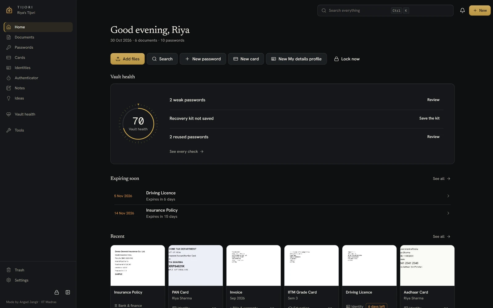
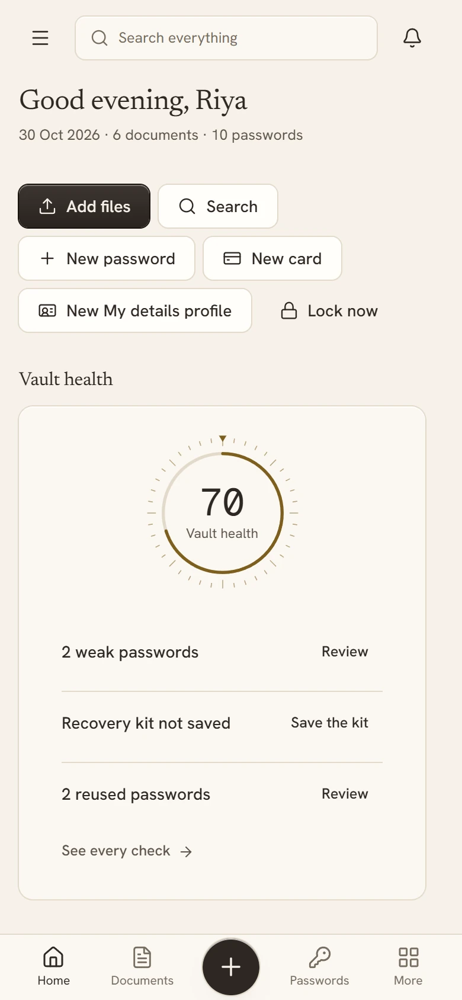
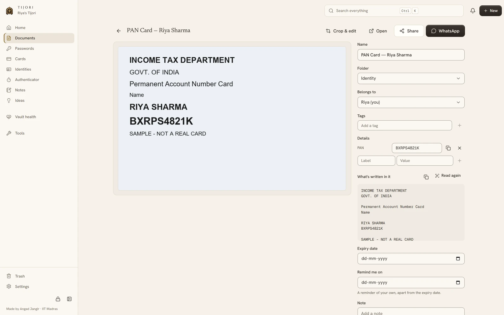
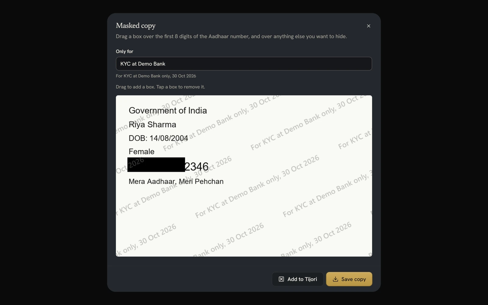
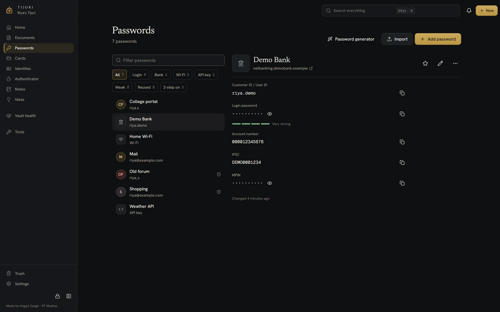
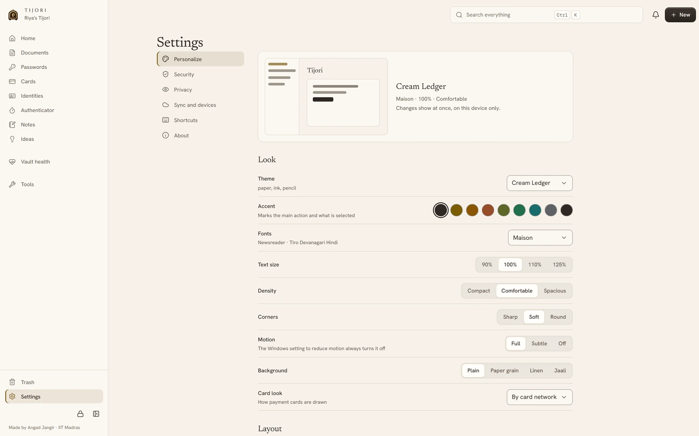
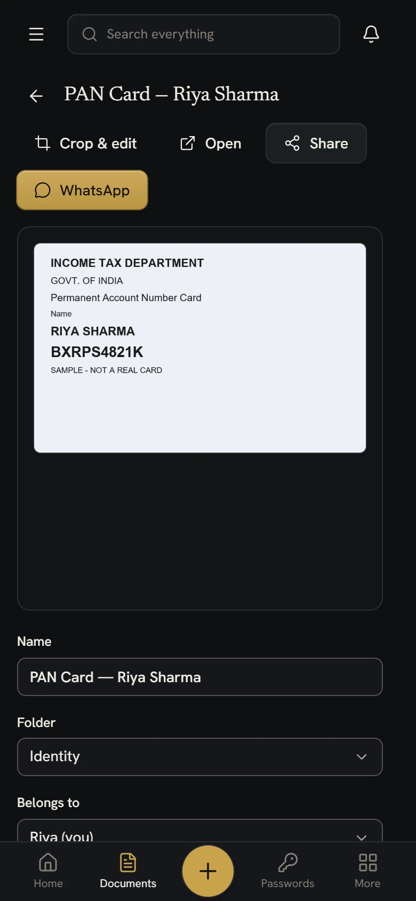

Your documents and passwords, locked.
A private vault for your papers, passwords, cards, notes and ideas. Tijori files documents by itself, and encrypts everything on your device before it goes anywhere.
Tijori is a Windows app. On this computer you can use the web app.


- Encrypted on your deviceArgon2id and XChaCha20-Poly1305
- No Tijori serverNo account, no analytics, no ads
- Works offlineReading and search stay on the device
- Your own Google DriveOptional sync of sealed files only
I.By itself
Drop a file. Tijori does the filing.
Drag in a PDF, a phone photo or a screenshot. Tijori reads it on your device, works out what it is, gives it a proper name and puts it where it belongs. You step in only when it isn't sure.

- I
Reads
The PDF's own text, or offline OCR for photos and scans, in English and Hindi (on Windows, Hindi needs its language pack). Nothing is uploaded to be read.
- II
Names
"Aadhaar Card — Riya Sharma", "IITM Grade Card — Sem 3". Clear names instead of IMG_2041.jpg.
- III
Files
Into Identity, Education, Bank and finance, Tax, Medical, Vehicle and more, by what the paper says, not the file type.
- IV
Tracks
Expiry dates for passports, licences, insurance and PUC, with reminders before they lapse.
Not sure? It asks once and remembers your answerExact duplicates are skippedYour own folders and family members too
II.Made for Indian paperwork
Indian papers, handled properly.
Tijori knows 32 kinds of document, and it checks the numbers on the ones that matter, so a misread digit never ends up on a form.
- AadhaarThe 12-digit number is verified with its checksum. Front and back are paired, and the address and PIN are read from the back.Verhoeff check
- PANThe number's pattern is checked and the holder's name is picked up.Pattern check
- PassportThe machine-readable lines are read and their check digits verified. Expiry is tracked.MRZ check digits
- Driving licenceLicence number and validity, with a reminder before it needs renewing.Expiry tracked
- Voter ID, RC, PUCNumbers pulled out for one-click copy. PUC and insurance expiry tracked.Expiry tracked
- MarksheetsGrade cards, marksheets, hall tickets, fee receipts and degree certificates, each named by exam or semester.Roll numbers
- Bank and taxStatements, passbooks, Form 16, ITR and salary slips, with IFSC and account numbers ready to copy.Ready to copy
Also insurance, medical reports, vaccination and birth certificates, rent agreements, property papers, tickets, visas, warranties and bills.
The paperwork, done
Locked e-Aadhaar PDFs open by themselves.
The e-Aadhaar you download from UIDAI is locked with a password made from the first four letters of your name and your year of birth. Tijori tries it for you from the details it already holds, so the file opens without a hunt.

Masked Aadhaar, with a purpose
Share a copy with the first eight digits hidden and a line across it, such as "For KYC at HDFC Bank only, 29 Oct 2026". On Windows Tijori finds the digits for you; on the phone you drag a box over them.
Packs for the usual errands
KYC, passport, licence renewal, admission. Tijori gathers the papers each one needs, shows what is missing, and makes one PDF to send.
Sized for government forms
Compress a scan to under 20, 50, 100, 200, 300 or 500 KB, crop a passport photo to 35 × 45 mm, turn photos into one PDF, and merge, split, reorder or rotate PDF pages.
Straight to WhatsApp
Send the real file through the Windows or phone share sheet, not a link. On Windows, shared copies sit in a private folder that is wiped after ten minutes.
III.Passwords and more
Your passwords live here too.
Logins, bank details, cards, Wi-Fi and 2FA codes, kept in the same vault as your papers and sealed with the same key.

Passwords
Logins, bank accounts with IFSC and MPIN, Wi-Fi, API keys, licences and memberships, plus your own details (name, address, PAN) ready to copy. A generator, password history, and CSV import from Chrome, Edge, Firefox, Bitwarden, LastPass, 1Password or KeePass.
Cards
A wallet that recognises Visa, Mastercard, RuPay, Amex and Diners, with finishes you choose. Showing a CVV or PIN asks for your master password again.
Authenticator
Every 2FA code in one place with a large countdown. Add an account from a QR code in an image or on the clipboard, or type its secret.
Health check
One score for the whole vault: weak, reused and old passwords, breached ones if you switch that check on, accounts without 2FA, expiring documents and backup age. Each row has a button that fixes it.
Copied secrets stay out of Windows clipboard history and clear after 30 seconds.
IV.Make it yours
Make it feel like yours.
Every device keeps its own look, so the laptop can be dark while the phone stays light. Change it in Settings and watch a live preview follow along.
Eight themes, eight accents
- Themes
- Eight, or Match Windows to pair a light one with a dark one
- Accents
- Eight, from brass and saffron to silver and ink
- Type
- Four font pairings, or Windows' own fonts
- Text size
- 90, 100, 110 or 125%
- Density
- Compact, comfortable or spacious
- Corners
- Sharp, soft or round
- Motion
- Full, subtle or off, and it follows Windows
- Texture
- None, paper grain, linen or jaali
- Language
- English or हिन्दी for the menus, home, lock screen and settings
- Dates
- 29/10/2026 · 29 Oct 2026 · 2026-10-29
- Card finishes
- Black metal, gold, platinum, emerald or rose
- Its name
- "Riya's Tijori" on the lock screen and in the sidebar

V.Private by design
There is no Tijori server.
No account to make, nothing to log in to, no analytics and no ads. Your vault is sealed on your device with a key made from your master password. If you sync, Google keeps only the sealed files, in a hidden folder of your own Drive.
- Your PCOpens with your master password
- Your Google DriveA hidden app folder that holds sealed files only
- Your phoneOpens with the same password
- What Google can see
Sealed files, not their contents.
That Tijori's hidden folder exists, how large the sealed files are and when they changed, and your email address. Not one word inside them.
- What we can see
Nothing at all.
There is no server for anything to reach, and no analytics or crash reports. This website has no tracking either.
- What only you can open
Everything.
With your master password, or with the recovery key you keep on paper. Without one of them, nobody can open the vault, including us.
Argon2id · 64 MiB · 3 passes256-bit keyXChaCha20-Poly1305How Tijori protects your data
VI.Everywhere you are
One vault on your PC and your phone.
The Windows app and the phone app open the same vault. Add a paper on one and it reaches the other at the next sync, still sealed.
On Windows
Windows 10 and 11. Unlock with Windows Hello, find anything with Ctrl K, and call Tijori from anywhere with Ctrl Shift Space. It locks itself when Windows locks or sleeps, and can wait quietly in the tray.
On your phone
Android or iPhone. It installs from the browser, with no app store, and opens your vault from Google Drive with your master password. Photograph a paper and it is filed like any other.
Scan with your phone's camera, or openangadseth.github.io/tijori/app

VII.Questions
What people ask first.
Is Tijori really free?
Yes. There is no paid tier, no trial and no ads. Tijori has no server to pay for, and sync uses space in your own Google Drive.
Where is my data kept?
On your own devices: in %APPDATA%\com.angad.tijori on Windows, and in the browser's storage on your phone. If you turn on sync, sealed copies also go to a hidden app folder in your Google Drive that only Tijori can use.
What if I forget my master password?
Open the vault with the recovery key you saved when you made it, then choose a new password. Without the password or the recovery key, nobody can open the vault, including us. That is the point, so keep your Recovery Kit somewhere safe. How to recover
Why does Windows warn me when I install it?
Tijori is made by one developer and does not have a paid code-signing certificate, so SmartScreen may say "Windows protected your PC". Choose More info, then Run anyway. You can check the file's SHA-256 against the one on the download page first.
Do I need a Google account?
No. Tijori works fully on one device without one. Google Drive is only for keeping your PC and phone in step, and for a copy that lives somewhere other than your PC.
What happens to my vault if I uninstall?
It stays where it is. The uninstaller removes your vault only if you tick "Delete the application data", and Tijori warns you before that happens. Uninstalling safely
Is the source code public?
Not at the moment. The security design is published in full: the file format, the cryptography, and every network connection the app makes. Read it
Who makes Tijori?
Angad Jangir, at IIT Madras. He built it to keep his own documents and passwords in one private place, and keeps it free.